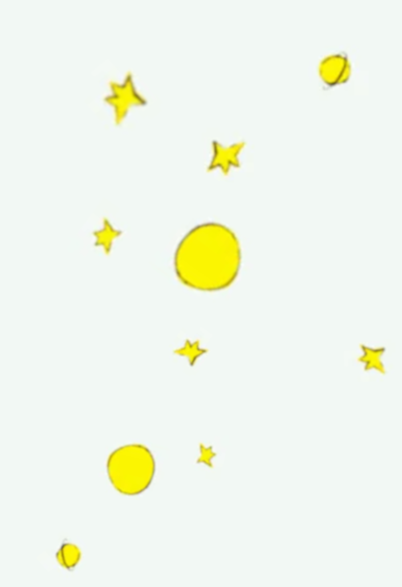
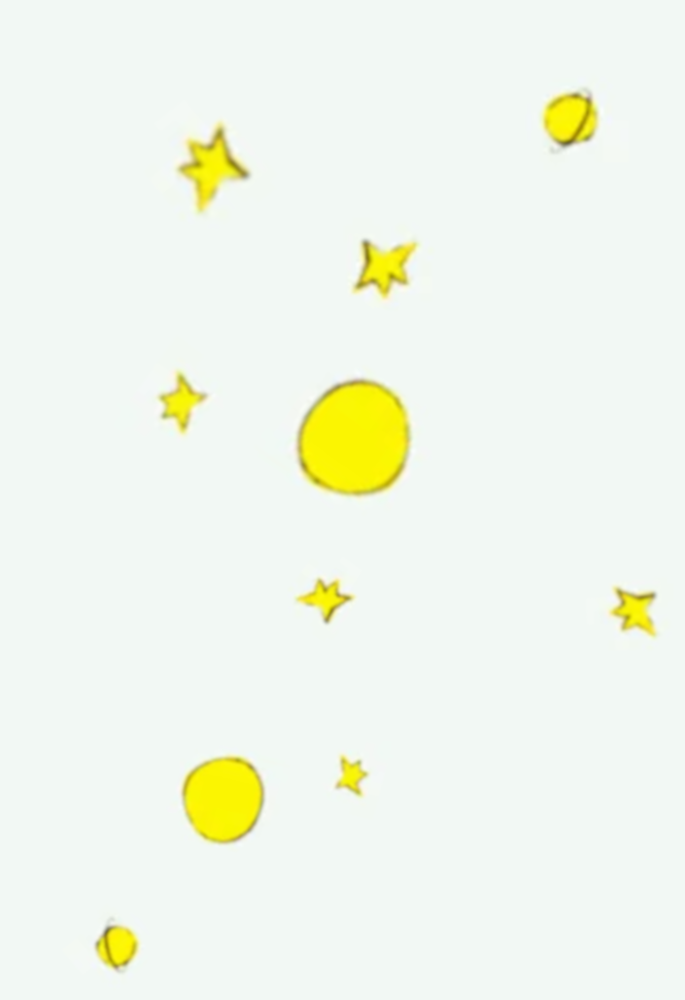

Il libro
É il racconto più conosciuto della produzione letteraria di Antoine de Saint-Exupéry.
La storia è stata votata come miglior libro del 20° secolo in Francia ed è una delle opere letterarie più vendute della storia.
L'autore lo scrisse negli Stati Uniti e qua venne anche pubblicato il 6 aprile del 1943 a New York da Reynal & Hitchcock.
Solamente nel 1945 (dopo la scomparsa dell'autore) fu pubblicato in Francia, a Parigi da Gallimard.
Il libro è dedicato all'amico dell'autore Léon Werth.
La storia affronta temi fondamentali come il senso della vita e il significato dell'amore e dell'amicizia.
Ogni capitolo narra un incontro del piccolo principe con un personaggio diverso che rappresenta un'allegoria o uno stereotipo della società moderna e contemporanea.
L'opera è stata illustrata dall'utore stesso attraverso una decina di acquerelli naïf.
I disegni sono stati inolre utilizzati come copertine per il libro.